捕獲器で連れて来られる際に、猫が入った捕獲器をそのままむき出しで連れて来られるのは、あまり良い方法ではありません。
猫は閉じ込められた空間で、外部からの視線を浴びる事を大変怖がります。
持ち歩く際には揺れるので怖がって、おしっこをしてしまうかもしれません。
今回は捕獲器に入った猫を、なるべく怖がらせず、且つおしっこをされても、猫や床が汚れない方法を２種類ご紹介します。
まず１つ目。大き目の布で捕獲器を包む方法をご紹介します。
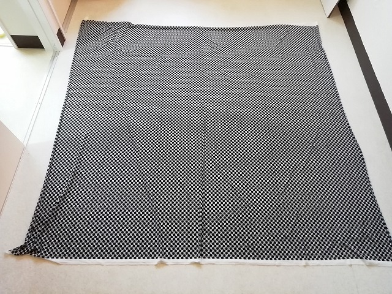
布団のシーツ類等を用意し広げます。(写真の物は170×170㎝位です)
その上にペットシーツを敷きます。
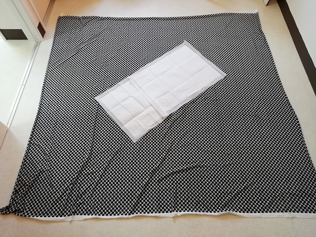
ペットシーツの上に捕獲器を置きます。
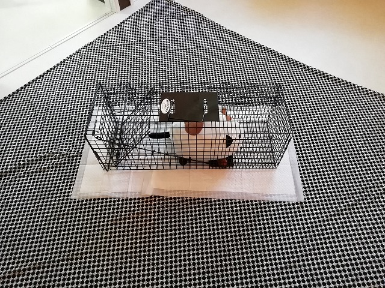
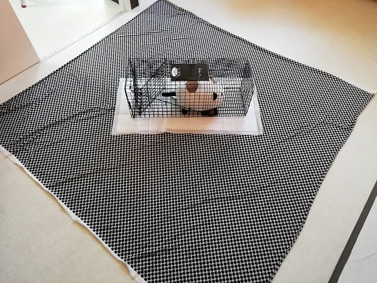
布で捕獲器を、覆い隠す様に巻きます。
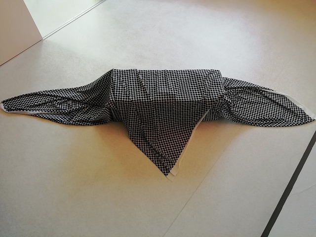
最後に写真の様に結び玉を作って完成です。

この方法だと完全に猫ちゃんを覆い隠す事が出来るので、怖がりの猫ちゃんでも落ち着かせる事が出来ます。(外部からの視線を特に怖がる外猫さんには非常に効果的です。)
ただし気密性が高くなるので、なるべく薄い生地の布を使用して下さい。
生地の素材としては、布団のシーツの様な薄い素材が理想的です。
冬で手術の前日に捕獲した場合は、（参考： 捕獲した猫の温度管理 ）を参照して下さい。
※ ビニールシートはもっての外です。たちまち熱中症になるので、使用は絶対に控えて下さい。
ところで、シーツの大きさによっては、縦幅は十分だが横幅が足りず、捕獲器の四隅が露出、はみ出る場合もあります。
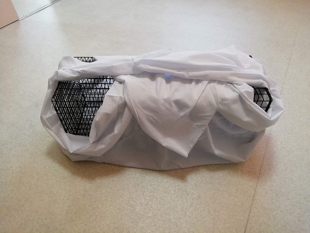
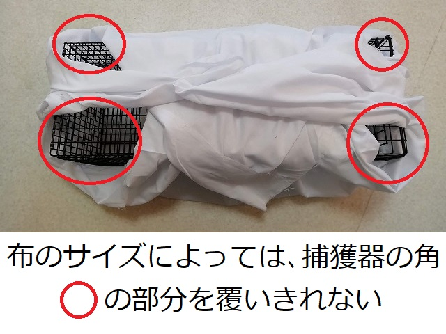
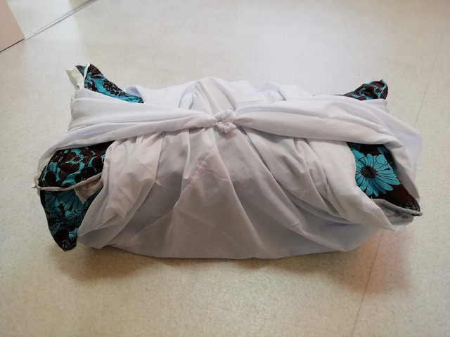
その際、写真の様に別の布やバスタオルを捕獲器の上に置いて、そののち捕獲器を包んで結ぶと、中の猫ちゃんを完全に隠せます。
外部からの視線を怖がる猫ちゃんや、寒い日の防寒には優れた方法です。
一方で、完全に覆い隠す事が全てにおいて優れている訳ではありません。
夏の暑い時や、包む布が毛布の様な厚手の物しかない場合は、中の熱を逃がすため、あえて隙間を開けておくのも一つの方法です。
もう１つの方法。新聞紙の上に写真の様にペットシーツを敷きます。
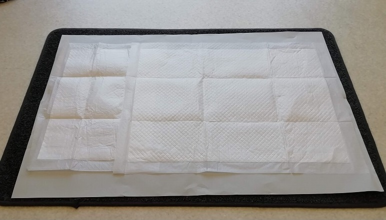
ペットシーツの上に捕獲器を置きます。
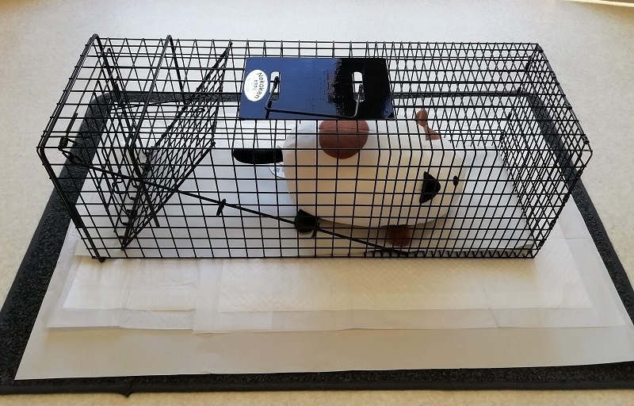
一番下に敷いてある新聞紙を写真の様に、ガムテープ等で貼り付けます。
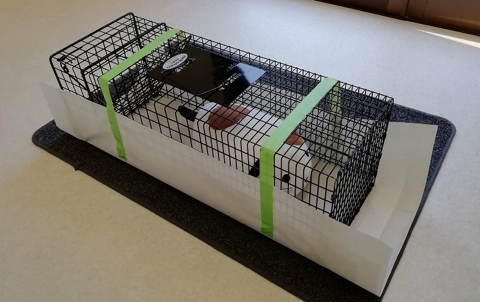
そして・・・
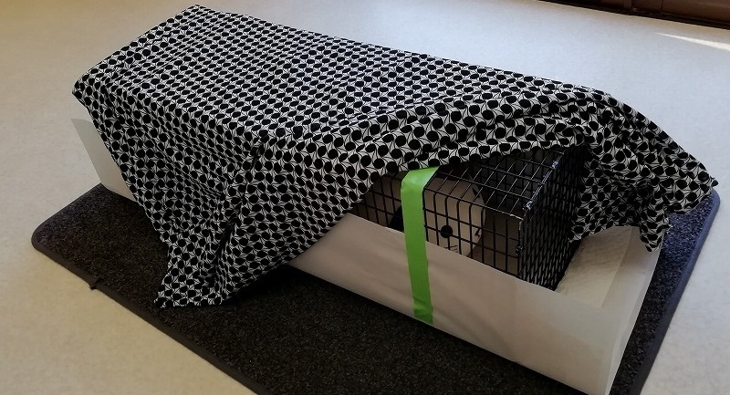
この状態でシーツ類等を被せて、猫を隠してあげてから連れてきて頂けると、猫も落ち着きますし、病院でおしっこをされても床が汚れないので助かります。
※ 伝染病の蔓延を防ぐために、使用した布はハイターに漬けた後洗濯し、1度使用した捕獲器は、次の猫を捕まえる前に、良く洗うようにして下さい。